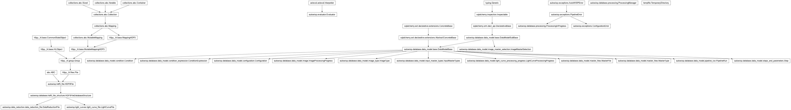

autowisp.database.processing module
Class Inheritance Diagram

Define base class for processing images or lightcurves.
- exception autowisp.database.processing.ProcessingInProgress(pipeline_run)[source]
Bases:
PipelineErrorRaised when a particular step is running in a different process/host.
- class autowisp.database.processing.ProcessingManager(pipeline_run_id, version=None)[source]
Bases:
objectUtilities for automated processing of images or lightcurves.
- Attrs:
- configuration(dict): Indexed by parameter name with values further
dictionaries with keys:
version: the actual version used including fallbackvalue: dict indexed by frozenset of expression IDs that an image must satisfy for the parameter to have a given value.- condition_expressions({int: str}): Dictionary of condition
expressions that must be evaluated against the header of each input images to determine the exact values of the configuration parameters applicable to a given image. Keys are the condition expression IDs from the database and values are the actual expressions.
- step_version(dict): Indexed by step name of the largest value of the
actual version used for any parameter required by that step.
current_step(Step): The currently active step.
- _current_processing(ImageProcessingProgress): The currently active
step (the processing progress initiated the last time start_step() was called).
- _processed_ids(dict): The keys are the filenames of the required
inputs (DR or FITS) for the current step and the values are dictionaries with keys
'image_id'and'channel'identifying what was processed.- _evaluated_expressions(dict): Indexed by image ID and then channel,
dictionary containing dictionary with keys:
values: the values of the condition expressions for the given image and channel indexed by their expression IDs.
matched: A set of the expression IDs for which the corresponding expression converts to boolean True.
calibrated: the filename of the calibrated image
dr: the filename of the data reduction file
masters: A dictionary indexed by master type name of the best master of the given type to apply to the image
An additional entry with channel=None is included which contains just the common (intersection) set of expressions satisfied for all channels.
- _master_expressions(dict): Indexed by master type, then tuple of
expression values ordered by expression ID of the masters of the given type that match the given expression values.
- pending(dict): Information about what images or lightcurves still
need processing by the various steps. The format is different for image vs lightcurve processing managers.
- __call__(limit_to_steps=None)[source]
Perform all the processing for the given steps (all if None).
- __init__(pipeline_run_id, version=None)[source]
Set the public class attributes per the given configuartion version.
- Parameters:
pipeline_run_id (int) – The ID of the PipelineRun using the instance. If set to None, all logging is suppressed and no processing can be performed. Useful for reviewing the results of past processing.
version (int) – The version of the parameters to get. If a parameter value is not specified for this exact version use the value with the largest version not exceeding
version. By default us the latest configuration version in the database.
- Returns:
None
- _cleanup_interrupted(db_session)[source]
Cleanup previously interrupted processing for the current step.
- _create_current_processing(step, target, db_session)[source]
Add a new ProcessingProgress at start of given step.
- _get_best_master(candidate_masters, image_eval)[source]
Find the best master from given list for given image/channel.
- _get_evaluated_entry(evaluate, image_type_id, calib_config, db_session, image_id=None, channel=None)[source]
Return entry to add to self._evaluated_expressions.
- static _get_extra_header(db_image)[source]
Return the kewyords to auto-add to FITS headers at calibration.
- _get_master(master_type, image_values, image_eval, db_session, *, ambiguous_ok=False)[source]
Return the master that should be used for the given image.
- Parameters:
ambiguous_ok (bool) – If True and multiple candidates exist but none has
use_smallestset, returnNoneinstead of asserting. Only pass True for master types (e.g.single_photref) whose selection is done externally viaImageMasterSelectionrather than by evaluating a header expression.
- _progress_image_type(processing_progress, db_session)[source]
Return the
image_typename in a progress row’s log names.The per-process log filenames are keyed on
processing_stepandimage_type(seesetup_process). Image processing has the image type on the progress row directly; lightcurve processing derives it from the single photometric reference. Subclasses supply the mapping.- Parameters:
processing_progress – A row of
_progress_model.db_session – Active session for any lookups.
- Returns:
The image-type name used when the logs were written.
- Return type:
- _write_config_file(matched_expressions, outf, db_session, *, db_steps=None, step_names=None)[source]
Write to given file configuration for given matched expressions.
- Returns:
Set of tuples of parameters and values as set in the file. Used for comparing configurations.
- add_masters(new_masters, step_name=None, image_type_name=None)[source]
Add new master files to the database.
- Parameters:
new_masters (dict or iterable of dicts) –
Information about the new mbaster(s) to add. Each dictionary should include:
type: The type of master being added.
filename: The full path to the new master file.
preference_order: Expression to select among multiple possible masters. For each frame the expression for each candidate master is evaluateed using the frame header and the master with the smallest resulting value is used.
disable(bool): Optional. If set to True the masters are recorded in the database, but not flagged enabled.
step_name (str) – The name of the step that generated the masters.
image_type_name (str) – The name of the type of images whose processing created the masters.
- static check_interrupted_statuses(step_module, step_name, interrupted)[source]
Verify a step can clean up after the progress it is handed.
Unlike the start status, there is no universally valid value here: how far a step can get before being interrupted is genuinely step-specific (most only ever record “started”, but lightcurve creation also has a “points added, not yet final” stage), so every step with a
cleanup_interrupteddeclares its ownallowed_interrupted_status_values. As for the start status, a declaration ofNonemeans the step sorts this out itself –fit_magnitudesreads an iteration number out of the status rather than matching it against a fixed set.Checked once here rather than inside each step’s
cleanup_interrupted, because the statuses come fromProcessedImagesrows that only the manager reads.- Parameters:
step_module – The module implementing the step.
step_name (str) – Its name, for the message.
interrupted – The
(filename, status)pairs about to be handed to the step’scleanup_interrupted.
- Returns:
None
- static check_start_status(step_module, step_name, start_status)[source]
Verify a step can start from the status the database implies.
The status says how far a previous run got.
None– nothing done yet – is always acceptable, so a step that cannot resume at all declares nothing; anything else means the stored progress and the step disagree about what resuming means. A step that can resume lists the extra statuses it accepts in its module-levelallowed_start_status_values, and a step that declaresNoneworks this out for itself (fit_magnitudesderives an iteration number from the status rather than just checking it).This lives here, rather than as an assert repeated in every step, because it is only meaningful when the manager derives the status from
ProcessedImagesrows – run standalone, a step is handed a constant by its ownmain().- Parameters:
step_module – The module implementing the step.
step_name (str) – Its name, for the message.
start_status – What the manager is about to pass it.
- Returns:
None
- create_config_file(example_header, outf, steps=None)[source]
Save configuration for processing given header to given output file.
- Parameters:
example_header (str or dict-like) – The header to use to determine the values of the configuration parameters. Can be passed directly as a header instance or FITS or DR filename.
outf (file or str) – The file to write the configuration to. Can be passed as something providing a write method or filename. Overwritten if exists.
steps (list) – If specified, only configuration parameters required by these steps will be included.
steps=None
- Returns:
None
- evaluate_expressions_image(image, db_session)[source]
Return evaluator for header expressions for given image.
- Parameters:
image (Image) – Instance of database Image for which to evaluate the condition expressions. The image header is augmented by
IMAGE_TYPEkeyword set to the name of the image type of the given image.db_session – Used to select the best master.
return_evaluator (bool) – Should an evaluator setup per the image header be returned for further use?
- Returns:
Evaluator ready to evaluate additional expressions involving FITS headers. Only returned if
return_evaluatoris True.- Return type:
Evaluator or None
- find_processing_outputs(processing_progress, db_session=None)[source]
Return all logging and output filenames for given processing ID.
Works for both image and lightcurve processing: everything but the progress table (
_progress_model) and the image-type lookup (_progress_image_type()) is shared, and both managers write their logs through the sameprocessing_step+image_typenaming.- Parameters:
processing_progress – Either a
_progress_modelrow or its integer id.db_session – Optional active session; one is opened if omitted.
- Returns:
(main_fnames, worker_fnames)as produced byget_log_outerr_filenames.
- Return type:
- get_config(matched_expressions, db_session, *, db_step=None, step_name=None, image_id=None, channel=None)[source]
Return the configuration for the given step for given expressions.
- get_master_fname(image_id, channel, master_type_name)[source]
Return the filename of best master for a given image/channel.
- get_matched_expressions(evaluate)[source]
Return set of matching expressions given an evaluator for image.
- get_param_values(matched_expressions, parameters=None, db_session=None)[source]
Return the values to use for the given parameters.
- Parameters:
matched_expressions (set) – Set of expression IDs that the image we are getting configuration for matches.
parameters ([] or str) – List of parameter names, or a step, or its name to get configuration for. Defaults to current step if not specified.
as_args (bool) – If True, return a list of arguments ready to pass directly to one of the command line parser of the processing steps.
db_session – Session to use for DB queries. Only needed if specifying parameters by step name or using default.
- Returns:
- The values for the given parameters indexed by
parameter name.
- Return type:
- get_product_fname(image_id, channel, product)[source]
Return the
drorcalibratedfilename of specified image/channel.self.evaluate_image_expressions() must already have been called for this image.
- set_pending(db_session)[source]
Set the unprocessed images and channels split by step and image type.
- Parameters:
db_session (Session) – The database session to use.
- Returns:
- (Image, str)}:
The images and channels of the specified type for which the specified step has not applied with the current configuration.
- Return type:
{(step.id, image_type.id)